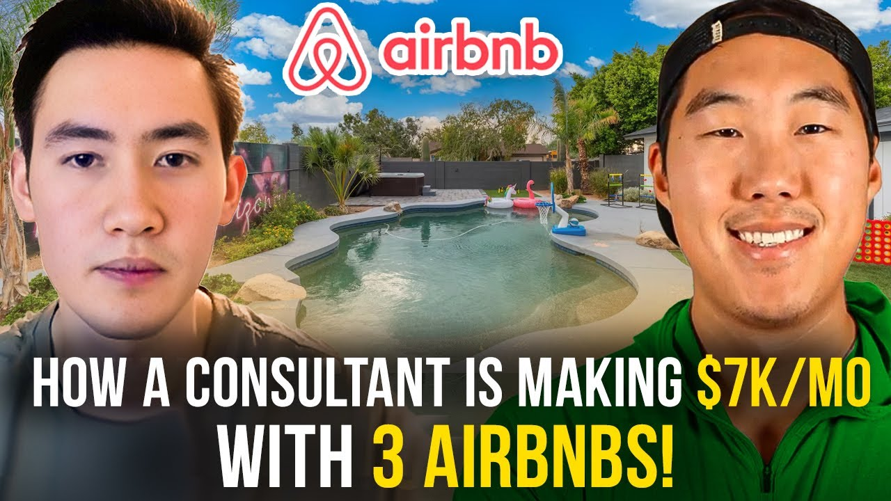

How James Built a $7,000/Month Airbnb Business in 57 Days While Working Full-Time
James Saunders went from zero real estate experience to $7,000/month in profit with 3 properties in just 57 days—all while keeping his consulting job. Learn his goal-setting system and remote management strategy.


Use This Like a Tool
The point of this page is not more information. The point is better judgment before you act.
- Pull the real numbers first.
- Run a base case and a stress case.
- Use the result to make a cleaner decision, not a faster emotional one.
James Saunders generates $7,000 per month in profit from 3 Airbnb arbitrage properties—and he secured his first deal in just 57 days while working full-time as a consultant. At 24 years old with zero real estate experience, James proved that aggressive goal-setting and consistent action beat experience every time.
This case study reveals exactly how James built a multi-property portfolio across state lines, including the 20-30 calls it took to get his first yes, the $10,000 setup budget for a 2,900 square foot property, and the 5-6 hours per week he spends managing everything alongside his demanding consulting career.
In this article:
- Quick Results Summary
- The Starting Point
- The 57-Day Timeline
- Cold Calling Strategy
- Remote Property Management
- Design and Setup
- Financial Results
- Key Lessons for Beginners
- Tools & Systems Used
- FAQs
Quick Results: James' Airbnb Arbitrage Numbers
| Metric | Value | Context |
|---|---|---|
| Monthly Profit | $7,000 | Combined from 3 properties |
| Properties | 3 | Multiple states |
| Time to First Property | 57 days | Beat 90-day goal by 33 days |
| Setup Cost (Property 2) | <$10,000 | 2,900 sq ft with hot tub |
| Weekly Management Time | 5-6 hours | With full-time job |
| Landlord Calls to First Yes | 20-30 | Then 3-4 calls per property after |
| End of Year Goal | 10 properties | 8 additional this year |
James' Background: 24 Years Old with Zero Experience
You don't need decades of experience to build a profitable Airbnb business. James graduated college just two years before starting his arbitrage journey, with nothing but a consulting job and a dream of building something of his own.
James' entrepreneurial drive came from his parents. They were both entrepreneurs who ran their own business while he was growing up. He saw firsthand both the struggles and the rewards—they were busy, often working long hours, but they had flexibility. When something mattered, they could be there.
"They weren't always there—they were pretty busy a lot. But at the same time, that kind of showed me that you could have that flexibility if you had something you want to attend, like a kid's event or something."
That flexibility became even more important when James had his first child. Suddenly, the standard career path—work 40+ years for someone else, retire at 65—felt inadequate. He wanted to be present for his family while still building wealth.
College served its purpose as a learning experience: picking up skills, developing relationships, understanding how to work. But James always knew employment was a stepping stone, not a destination.
His parents, like many entrepreneur parents, initially suggested the traditional route: stay in school, find a good job, build security. They knew how hard entrepreneurship could be. But when James explained his Airbnb arbitrage plans, they became his biggest supporters.
Key Takeaway: James didn't wait until he had "enough experience" or "the right time." At 24, with a new baby and a demanding consulting job, he decided the right time was now.
The 57-Day Journey: From Zero to Live Property
The Challenge: 90 Days or Bust
Legacy Investing Show's free training mentions that students typically get their first property within 90 days. James heard that benchmark and immediately thought: I can do better.
He set a personal goal of 60 days.
This wasn't wishful thinking—it was strategic pressure. James knew himself: he needed concrete goals with deadlines to stay accountable. Without a number on a calendar, he'd drift, research endlessly, and never act.
"I'm a more goal-driven person, so when I write it down like 'this is exactly what I'm going to do,' I tend to do it instead of just thinking about it."
The Execution: Daily Actions
James broke the 60-day goal into daily actions:
- Make at least 5 calls per day
- Or make 20 calls per week
- Track every conversation in a CRM
- Research markets in batches, then call in batches
The batching approach was critical. Instead of researching one property, calling, researching another, calling—which fragments focus—James would research an entire market first. He'd add all potential properties to his CRM spreadsheet, note the details, then make calls back-to-back-to-back.
This method prevented:
- Calling the same landlord twice
- Losing momentum between calls
- Wasting time context-switching
The Result: 57 Days
James went live with his first property 57 days after joining the program. He beat his aggressive 60-day goal by 3 days and crushed the standard 90-day timeline by over a month.
But here's what really accelerated his progress: once he proved it was possible, the second and third properties came faster. He secured his second property almost back-to-back with the first. The third came in January—he found, signed, and launched it within 30 days.
"Once you know it's possible, once you get comfortable with the whole process, it just makes it so much easier."
Timeline Breakdown
| Milestone | Time from Start |
|---|---|
| Joined program | Day 0 |
| Market analysis complete | ~Week 2 |
| First landlord calls | Week 3 |
| First property signed | ~Week 7 |
| First property live | Day 57 |
| Second property signed | Week 9 |
| Third property signed | January (30 days) |
The Cold Calling Strategy: 20-30 Calls to the First Yes
No Sales Background Required
James came from an accounting background. Talking to people wasn't his weakness, but it wasn't his strength either. The prospect of cold calling landlords—strangers who might reject him—was intimidating.
But he found a way through: goal-setting and honesty.
The Goal-Based Approach
Instead of thinking about rejection, James focused on activity metrics:
- 5 calls minimum per day
- 20 calls minimum per week
- Track everything in a CRM
This shifted focus from outcomes (which he couldn't control) to actions (which he could). Whether landlords said yes or no, James knew that consistent activity would eventually produce results.
The Honest Pitch
When landlords asked about his experience, James didn't fabricate credentials. He told the truth:
"To be frank with you, this will be my first property. I've never done it, but I'm in a mastermind group and I feel perfectly comfortable. I have people to help me out, and I promise I'll always pay on time."
The response surprised him. Landlords appreciated the honesty. It built immediate trust—if James was honest about his inexperience, he'd probably be honest about everything else.
The Conversion: First Yes at Call 20-30
It took James approximately 20-30 landlord conversations before he got his first yes. That might sound like a lot, but consider the context:
- Most conversations were polite, even when they said no
- Landlords provided market insights even when declining
- Each call improved James' pitch and confidence
After that first yes, everything changed. His second and third properties came from just 3-4 calls each. The practice paid off.
"Cold calling, to be honest, most people responded way better than I thought. Even if they weren't interested, they were just like 'hey, thank you for calling, I appreciate the interest.'"
What Made Landlords Say Yes
Creating Win-Wins: James approached calls with a mindset of helping landlords, not extracting value from them. He explained the benefits: consistent rent, property being monitored regularly, responsive tenant who cares about maintaining the property.
Building Rapport: The Zoom call strategy was key for one landlord. James suggested a video call so they could see each other face-to-face. This transformed him from "random caller" to "real person with a real business."
Following Up: One landlord said he'd "think about it and talk to his wife"—then went silent for a week. James thought it was dead. A week later, the landlord called back, interested. Patience and follow-up paid off.
Remote Property Management: 18-20 Hours Away
The Challenge: Different State, No Local Presence
One of James' properties is located 18-20 hours by car from his home—a completely different state. He's never physically visited it. Yet it operates smoothly, with guests booking and checking in without James ever being onsite.
This sounds risky, even reckless. But James built systems that make remote management not just possible, but preferred.
Finding the Team: Cleaners First
The secret to remote management is finding one great person who can refer you to everyone else. For James, that person was his cleaner.
Step 1: Find cleaners through Thumbtack James posted his job on Thumbtack and received multiple responses. He immediately noted who responded fastest—quick responders tend to be more reliable overall.
Step 2: Interview for communication James was explicit about his needs: "This is going to be a long-term relationship. I won't be there in person at all. I rely heavily on you updating me." He established expectations upfront.
Step 3: Get referrals for everything else Once he had a reliable cleaner, James asked: "Who do you know that's good? Who's your handyman? Who handles repairs?" Cleaners who work with multiple Airbnb properties know the local network.
"Rockstars know rockstars... when they refer people to you, they're putting their reputation on the line. They're not going to refer somebody that's going to overcharge you or that's just slow."
The Communication Test
James discovered a powerful vetting technique: response speed predicts reliability.
When he reaches out to potential team members, whoever responds quickest automatically goes to the top of his list. This isn't because fast responders are desperate (a common misconception)—it's because fast responders are motivated, organized, and communicative.
Lazy, unreliable people take days or weeks to respond. They're not going to suddenly become responsive once you hire them.
Managing Without Being There
With a reliable team in place, James' weekly routine looks like this:
Automated by software (Guesty, Price Labs):
- Guest messages and check-in instructions
- Pricing adjustments based on demand
- Calendar synchronization across platforms
- Smart lock code generation
Handled by local team:
- Turnover cleaning after each guest
- Restocking supplies
- Minor repairs and maintenance
- Photo verification of property condition
James' involvement (5-6 hours/week total for 3 properties):
- Reviewing booking requests
- Handling unusual guest questions
- Coordinating larger repairs
- Optimizing pricing strategy
Property Setup: Entirely Remote
For the second property—the 4-bed, 2-bath on 5 acres—James furnished it entirely without visiting. His wife handled design decisions (she has an eye for aesthetics), and they executed everything remotely:
- Research furniture online (Amazon, Wayfair)
- Order directly to property address
- Coordinate with handyman to receive and assemble
- Provide floor plans via phone photos—literally drew layouts on notecards
- Receive photo verification when complete
The property came partially furnished, which helped keep costs under $10,000. James and his wife added throw pillows matching local themes, upgraded linens, and ensured the aesthetic was cohesive.
Design and Setup: Under $10,000 for a 2,900 Sq Ft Property
The Property: Cabin-Style on 5 Acres
James' second property showcases what's possible with careful spending:
Property specs:
- 4 bedrooms, 2 bathrooms
- 2,900 square feet
- 5-acre lot
- Hot tub included
- Cabin-style aesthetic
Setup budget: Under $10,000 (including the hot tub)
Why It Worked: Partial Furnishing
The property came with quality furniture from the previous owner. James didn't need to start from scratch—he built on what existed:
Already in place:
- Core furniture pieces
- Kitchen basics
- Some decor matching the cabin aesthetic
James added:
- Throw pillows matching local area themes
- Updated linens and bedding
- Hot tub (major amenity upgrade)
- Kitchen supplies for guest cooking
- Roku sticks for streaming
The Design Approach
James doesn't consider himself design-savvy, and he joked about not even matching his own clothes well. But he had a secret weapon: his wife.
She researched aesthetics, coordinated colors, and ensured the space photographed well. Together, they committed to a specific style—mid-century modern for their first property—and stayed consistent.
Their process:
- Decide on overall style/aesthetic
- Browse Amazon and Wayfair filtered by that style
- Color-match accent pieces to walls and existing furniture
- Prioritize items that look good in photos
"My wife fortunately does have an eye for that. She's really able to look at the color of the wall, look at the room space... it's a really good combination, really good team effort."
Photography: Remote Execution
James used referrals to find photographers in his remote markets. He communicated shot lists, staged items via his local team, and received professional photos without ever visiting.
The cabin property's photos highlight:
- The spacious living room with wood accents
- Cozy bedrooms with matching linens
- The hot tub as a marquee amenity
- The 5-acre setting for privacy and nature
Financial Results: The Numbers
Property-by-Property Breakdown
Property 2 (Cabin - 4BR/2BA):
| Metric | February 2024 |
|---|---|
| Revenue | $6,500+ |
| Rent | $4,000 (utilities included) |
| Cleaning | Variable, paid monthly |
| Net Profit | ~$2,300 |
Note: February wasn't peak season. James projects $3,500+ monthly profit once summer arrives.
Combined Portfolio (3 properties):
| Metric | Current Average |
|---|---|
| Monthly Profit | $6,000-$7,000 |
| Properties | 3 |
| Avg Profit/Property | ~$2,200 |
Growth Trajectory
James' third property launched in late January 2024. His first full month was break-even as the listing built reviews and momentum. Subsequent months are projected significantly higher.
Year-End Goals
| Goal | Target |
|---|---|
| New Properties | 8 additional |
| Total Properties | 10 |
| Strategy | 2 properties per quarter |
| Model | Mix of arbitrage + acquisition |
James is also considering purchasing properties outright. With arbitrage cash flow providing stability, he can explore ownership for additional benefits:
- Tax advantages
- Equity building
- More control over amenities (no landlord restrictions on murals, permanent modifications)
Key Lessons: What James Learned
Lesson 1: Set Aggressive, Written Goals
The Mistake Others Make: Vague intentions like "I want to start an Airbnb business someday"
What James Did: Wrote down specific, time-bound goals. "60 days to first property" became his North Star.
Why This Matters: Goals create accountability. Without a deadline, "someday" never comes. James beat even his aggressive target because the number on his calendar demanded action.
"The goal-setting was big... if I didn't set those goals, I would have kind of just maybe like a lot of people, they come join, they get excited with the whole thing, but once they join they're like 'oh there's more work than I thought' and the motivation dies down."
- Set a specific launch date (not "soon"—pick a calendar date)
- Break it into weekly milestones
- Write it down where you'll see it daily
- Track progress in a spreadsheet or CRM
Lesson 2: Don't Mistake Education for Action
The Mistake Others Make: Consuming content endlessly—videos, courses, podcasts—without implementing What James Did: Learned a little, then applied it. Called landlords before feeling "ready." Signed a lease while still learning. Why This Matters: You learn more from one real conversation than ten hours of video content. Action reveals what you actually need to know next.
"You can learn all you want... you're never going to learn enough. But once you really jump into it, that's when everything happens."
- Set a knowledge deadline: "After X hours of training, I start calling"
- Make your first calls before you feel ready
- Learn from rejections—they teach better than courses
- Ask yourself: "What action am I avoiding by 'learning more'?"
Lesson 3: Be Completely Honest with Landlords
The Mistake Others Make: Fabricating experience or credentials to seem more qualified What James Did: Admitted upfront he was a first-time operator, explained his support system, and promised reliable payment Why This Matters: Honesty builds trust. Landlords aren't just evaluating your experience—they're evaluating your character. Someone honest about weaknesses will be honest about problems.
- Never lie about experience—it backfires
- Explain your training, systems, and support network
- Emphasize what you CAN promise: on-time rent, communication, property care
- Let your character sell when credentials can't
Lesson 4: Find Cleaners First, Build Team Through Referrals
The Mistake Others Make: Trying to build an entire team from scratch, vetting each person separately What James Did: Found one reliable cleaner, then asked for referrals to handymen, contractors, and other service providers Why This Matters: Good people know good people. One strong connection unlocks an entire network. Plus, referrals come with built-in accountability—the referrer's reputation is on the line.
- Start team-building with cleaners (they're most critical)
- Use response speed as a reliability indicator
- Ask every good hire: "Who else do you recommend?"
- Build your team through relationships, not job boards
Lesson 5: The Four-Minute Mile Effect
The Mindset Shift: Once you prove something is possible, it becomes easier to replicate James' first property took 57 days and 20-30 landlord calls. His second property came almost immediately after—the confidence and skills transferred. His third property took just 30 days from search to launch. Why This Matters: Your first deal is always the hardest. Every deal after benefits from proven scripts, established confidence, and demonstrated success.
"Before no one thought it was possible, once someone did it everyone started doing it... once you know it's possible, once you get comfortable with the whole process, it just makes it so much easier."
Tools & Systems: James' Tech Stack
Automation allows James to manage 3 properties on 5-6 hours per week. Here's his complete toolkit.
Essential Tools Overview
| Category | Tool | Purpose |
|---|---|---|
| Dynamic Pricing | Price Labs | Automatic rate adjustments based on demand and events |
| Property Management | Guesty | Centralized messaging, calendar, and automation |
| Team Management | Thumbtack | Finding and vetting local service providers |
| CRM | Course template | Tracking landlord calls and follow-ups |
| Smart Locks | Via Guesty integration | Auto-generated guest codes |
Price Labs for Set-It-and-Forget-It Pricing
James doesn't manually adjust prices. Price Labs handles:
- Base rate optimization
- Seasonal adjustments
- Event-based pricing spikes
- Minimum stay requirements
- Last-minute discounting (if enabled)
Time saved: Hours per week of market monitoring and manual adjustments
Guesty for Automation Central
Guesty is James' command center. The platform:
- Syncs calendars across Airbnb and Vrbo (preventing double bookings)
- Sends automated messages at key moments (booking confirmation, check-in, checkout)
- Generates unique smart lock codes per guest
- Provides centralized inbox for all platforms
- Schedules cleaner notifications automatically
Time saved: Guest communication becomes near-zero touch
The CRM for Landlord Tracking
James uses a simple spreadsheet (based on the course template) to track:
- Property addresses and landlord contact info
- Date and outcome of each call
- Notes on landlord personality and concerns
- Follow-up reminders
- General "gut feeling" about each opportunity
This system prevents embarrassing duplicate calls and ensures promising leads don't slip through cracks.
Watch James' Full Interview
Video highlights:
- 0:00 - Introduction and background
- 4:30 - Why this business model clicked
- 8:45 - Cold calling strategy and landlord conversations
- 14:20 - Remote property management breakdown
- 20:30 - Design and furnishing on a budget
- 25:00 - Financial results and future goals
Frequently Asked Questions
Can you really manage Airbnb properties you've never visited?
Yes—James manages a property 18-20 hours away that he's never physically seen. The keys are:
- Thorough vetting of local team members (cleaners, handymen)
- Photo/video verification at key milestones (setup complete, after turnovers)
- Automation software handling guest communication
- Clear expectations communicated upfront to your team
James did eventually visit his remote property—but only after it was fully set up, operational, and generating revenue. The visit was to experience it as a guest and refine details, not to make it functional.
How do you balance Airbnb with a demanding full-time job?
James works as a consultant, which isn't a 9-to-5—it's often more demanding. Here's how he balances:
Automation handles repetition: Guest messages, pricing, and lock codes are automatic. James doesn't touch routine operations.
Local teams handle physical tasks: Cleaners turn over properties, handymen fix issues. James coordinates via text, rarely needing calls.
Batching and boundaries: James dedicates specific times to Airbnb tasks rather than reacting constantly. He might spend Saturday morning reviewing the week's bookings and addressing anything unusual.
Total time: 5-6 hours per week for 3 properties, or less than 2 hours per property.
What if a landlord asks about my experience and I have none?
Tell the truth. James' exact words: "To be frank with you, this will be my first property. I've never done it, but I'm in a mastermind group and I feel perfectly comfortable."
This honesty accomplishes several things:
- Builds immediate trust (you're clearly not a scammer)
- Sets realistic expectations
- Shows confidence despite inexperience
- Demonstrates you have support systems in place
Most landlords aren't looking for experts—they're looking for reliable tenants who will pay on time and care for the property.
Start Your Airbnb Arbitrage Journey
Ready to build a $7,000/month Airbnb business while keeping your day job?
James proved that age and experience don't determine success—action does. At 24, with an accounting background and zero real estate knowledge, he built a three-property portfolio in months.
Learn more about Legacy Investing Show →
Related Success Stories
- How Gary Built a $35K/Month Airbnb Portfolio
- How Micah Found His First Property with One Facebook Message
- How Rob Made $100K from 3 Airbnbs with a 9-to-5
Helpful Resources
- Complete Guide to Airbnb Arbitrage
- Cold Calling Scripts for Landlords
- Remote Property Management Guide
About Legacy Investing Show
Legacy Investing Show is Preston Seo's comprehensive Airbnb arbitrage training program. Since its founding, the program has:
- Trained 2,000+ students across the United States
- Generated $10M+ in cumulative student revenue
- Helped students launch properties in 90 days or less
- Built a community of active investors sharing wins and learnings
Preston Seo has personally built a $15 million real estate portfolio generating over $400,000 per year in net profit from short-term rentals. He created Legacy Investing Show to teach the exact systems that scaled his business.
blog resources | Watch free training →
This case study is based on James Saunders' video interview conducted in March 2024. All statistics and quotes are directly from James' experience. Individual results vary based on market, effort, and capital invested.
Last updated: January 23, 2026
Questions that matter before you act
Frequently Asked Questions
Yes. James works as a full-time consultant and manages 3 Airbnb properties generating $7,000/month profit. He spends 5-6 hours per week on management using automation tools like Guesty and Price Labs.
James went from joining the program to going live with his first property in just 57 days. He set a personal goal to beat the standard 90-day timeline by 30 days, using aggressive goal-setting and consistent daily action.
James called approximately 20-30 landlords before getting his first yes. After that, he got his second and third yeses within just 3-4 calls each, as his pitch and confidence improved dramatically.
Yes. One of James' properties is 18-20 hours away by car, in a completely different state. He manages it entirely remotely through his cleaning team, handyman referrals, and automation software.
James furnished a 4-bed, 2-bath property (2,900 sq ft on 5 acres including a hot tub) for under $10,000. The property came partially furnished, and he sourced remaining items from Amazon and Wayfair.
No. James came from an accounting/consulting background with zero real estate experience. He learned everything through Legacy Investing Show's training and was honest with landlords about being a first-time operator.
James was completely honest: 'This will be my first property. I've never done it, but I'm in a mastermind group and I feel perfectly comfortable. I have people to help me out and I promise I'll always pay on time.' Landlords appreciated the honesty.
James finds cleaners first through Thumbtack, vets them for communication speed (fast responders are more reliable), and then asks for referrals to build his full team—handymen, contractors, and other service providers.